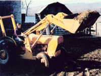
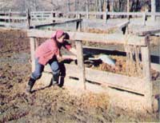
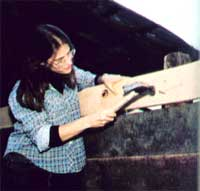
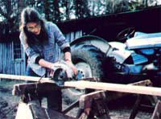
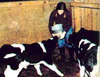

Working Up To It (A Guide For Women And Men)
By Lindsay Cobb
May/June 1982
Heading the following advice might help you avoid some of the "labor pains" of heavy work.
STAFF PHOTOS
Getting a new farm up on its feet, or remodeling that city home, or even putting in a new suburban garden can be a real challenge, whether the laborer is a man or a woman, single or married. The fact is that most self-reliance ventures share the common element of involving a great deal of plain old hard physical work. . . and the manner in which each individual or family approaches the necessary tasks will often determine whether the dream is realized, or-instead-the longed-for ideal turns into a never-ending nightmare of exhausting chores and guilt-inspiring half-completed projects.
Of course, it is possible to succeed . . . even when you're tackling a job the likes of which you've never attempted before. The main tricks in pulling off a successful project are [1] to prepare yourself, physically and mentally, for the tasks at hand ... [2] to work at a pace and on a schedule that will allow you to get ahead, but not burn you out in the process . . . and [3] to use the proper tools and equipment.
These guidelines are especially valid for folks who are just beginning to sink their roots in the country, yet a good number of novice homesteaders (particularly women) unknowingly-and through no fault of their own-use tools that are unsuitable, and/or work at a pace that's inconsistent with their physical conditioning.
Many back-to-the-land women, for example, are now-either alone or in conjunction with mates or friends-actively building their own houses, putting up the fences and sheds for keeping livestock, and working the fields... in short, doing the heavy labor once thought of as the domain of the menfolk. However, the female worker often doesn't realize that the equipment available for construction and farming has been designed for the generally taller and heftier frame of the male. Moreover, especially when they're working with men, many women-in an effort not to appear "weak" -labor at a pace inconsistent with their own energy patterns . . . which, when combined with the oversized tools, often results in strained muscles and unnecessary fatigue. In addition, both men and women, when starting out on an unfamiliar undertaking, often have unrealistic expectations of what they can reasonably expect to accomplish in a day's work.
With these thoughts in mind, I'd like to take the time to redefine what constitutes a suitable tool and a correct pace or schedule, plus what "being in condition" entails... particularly in relation to women who are involved in a move back to the land.
THE PLIGHT OF THE WEEKEND HOMESTEADER
The best advice I received (it was given to me by a neighboring dairy farmer) when beginning my first homesteading venture was, " Take it easy. " Like many other novice back-to-the-landers, I wanted to do everything at once . . . and, instead, ended up overwhelmed and frustrated by all the jobs facing me. I was a typical "weekend homesteader", too, depending on an urban salary to pay for my land. So every Friday evening I'd rush out to the country, work practically nonstop-trying to build the house, put up the fencing, and tend the garden-and more often than not, limp back to the city on Sunday night nursing a sprained ankle or sore back . . . and wondering whether anything could be worth the pain and trouble I'd experienced in the previous two days.
Now, however (after that initial sobering attempt and another more successful try), I know that homesteading is worth every bit of sweat and toil that goes into it ... but I also know what I can accomplish and which goals are merely the stuff of fantasy.
Of course, the thought of slowing your work pace might well make you anxious. If so, take a moment to examine the benefits of sensibly paced effort. Any seasoned worker will tell you that two of the most important ingredients making for a tiptop project are timing and organization. Professional carpenters and such don't rush frantically here and there. Instead, their workdays are calm and orderly . . . and yours should be, too, even if you have only weekends to devote to your farm-to-be.
Conditioning is another important consideration. If you spend five days out of each week hunched over a desk at a city job, you'll very likely injure yourself trying to plunge into a weekend marathon of farm work. Most new homesteaders-men or women-simply aren't fit, initially, for rigorous activity. Therefore, before going at hard physical labor full steam, you'll want to build up a basic layer of conditioning . . . and then gradually accustom your entire body to the demands of the job.
FITNESS AND PACING
In the workshops I conduct on preparing people for strenuous tasks, I've noticed that women often mention the frustration of trying to keep up with their male coworkers who-in general-seem to be stronger and able to work more quickly. Men and women are (obviously!) physically different, and these differences affect our working patterns. However, what's important isn't the proportion of fat and muscle on the male versus the female body, but rather how each individual uses and develops that muscle. Proper conditioning can improve the circulation of blood throughout the body and thus increase the capacity for sustained physical labor. In addition, although most folks aren't aware of this fact, improving one's flexibility by stretching can actually increase a person's available strength, as the muscle fibers can then slide past each other without "catching" and are thus able to contract fully.
So regardless of your sex, the first step in setting up the homestead should be to get fit. Two excellent books for anyone interested in improving his or her general condition are Tolal Fitness in 30 Minutes a Week ($2.50) and Maximum Performance ($2.95) by Laurence Morehouse and Leonard Gross. Both paperbacks are available at good bookstores or libraries, or can be ordered-at the prices listed plus 50 cents shipping and handling per book-from Simon & Schuster, Dept. TMEN, 1230 Avenue of the Americas, New York, New York 10020.
Once you've improved your condition, you'll still have to find a work pace that's comfortable. The important thing is to acknowledge your level of fitness, then find a level of exertion that matches your conditioning and stick to it ... regardless of the speed of your coworkers.
GIVE YOURSELF A BREAK
Even the most physically fit folks know the value of letting the body take a rest now and again. Muscles are responsive to a little care, too, so if you break your work with short periods of stretching or relaxation, you'll noticeably aid your muscle recovery speed and reduce end-of-day fatigue.
The long spells of standing that we all face-when hoeing or shoveling, for example-produce pressure in the blood vessels of the legs, and as a result the veins there can become dilated. (This is especially true for women whose veins have already been weakened by such circulatory stresses as pregnancy.) It's a good idea, then, to take short breaks during activities that require prolonged standing ... in order to relieve this strain on both the muscles and the circulatory system.
Working in a standing (or slightly bent) position for an extended length of time also stresses the back muscles. The thin column of vertebrae, which is effectively held together by ligaments, isn't well-designed for lifting or supporting weights. It's not surprising, then, that in heavy work the back-and especially the lower back-is generally the most misused area of the body. After laboring in the garden for an hour or two, for instance, the weight of your shoulders and head ( and that of whatever implement you may be swinging) bears down on the spinal column, pushing each vertebra onto the one below it and squashing the spongy pads between these thin bones . . . until you feel a familiar soreness in your back. When this occurs, most people tend to slump in order to reduce the strain on the natural arch of the lower back. And-if you're sensible- you'll listen to this message from your body and take a moment to relax.
I've found the following relaxation technique to be a marvelous muscle refresher. Developed by Edmund Jacobsen in the 1940's, the sequence is based upon the principle that in order to relax fully, we must first become aware of the degree of tension in the body and then gradually reduce it.
To perform Jacobsen's exercise, you'll need to lie down on a grassy spot or-if you're indoors-on the floor. Starting at your feet, make an effort to become aware of that part of your body. Tense the muscles, and then relax them. Continue the sequence of contracting and then loosening the muscles in each consecutive body part, all the way up to your head. Then tense and relax your entire body. Let your breathing deepen and visualize breath flowing into any part of your frame that still feels tight. It helps to imagine that you're creating more space for your muscles to expand, and to relax them until it feels as if they're dissolving into the ground below you. Allow your body to experience the full release of tension, and don't rush to grab control again. After all, you deserve a break ... so take it!
STRETCH FOR FLEXIBILITY
Of course, although the Jacobsen relaxation technique is an excellent way to revitalize the entire body, there'll be times during a typical workday (such as when you're weeding the asparagus bed or throwing bales of hay on a wagon) when you'll just need to get a kink out of a muscle rather than take a full-fledged break. In such a case, simply stretching for a few minutes can help ease the stress on the painful area.
Farm work-with its hoeing, plowing, lifting, and crouching-causes the muscles in the front of the body to shorten, while pulling the posterior musculature out of balance. Because efficient movement is dependent upon the balance of opposing sets of muscles, stretching the arms, shoulders, chest, and upper thighs as you work (as well as before and after exertion) is important.
There are numerous exercises designed for stretching the muscles you'll commonly use in farm work, so it'd be impossible to list all of them in this article. For an excellent all-round guide on the how-to of limbering up, I recommend Bob Anderson's Stretching. This thorough book explains and illustrates exercises for every part of the body. You can find the manual in good bookstores, or (for $7.95 plus $1.00 shipping and handling . . . California residents should add 6% sales tax) order it from Shelter Publications, Dept. TMEN, P.O. Box 279, Bolinas, California 94924. [ EDITOR'S NOTE: For instructions on how to perform a good general-purpose sequence of stretching maneuvers, turn this article .]
As with any other exercise, you should stretch only within your comfortable physical limits. Whenever you begin to limber up your muscles, remember to start with an easy stretch. Go to the point where you feel a mild tension and then breathe deeply as you hold that position for 10 to 30 seconds. Never "bounce" to get farther into the stretch (as you may have been told to do when trying to touch your toes in school). Such action only leads to tight-and sometimes even torn-muscles. After the easy stretch, move a bit farther until you again feel a mild tension, and hold this position for another 10 to 30 seconds, inhaling and exhaling in a slow, rhythmic manner.
BREATHE FOR YOUR BACK
You've probably noticed that in discussing stretching and relaxation, I've stressed the importance of deep, regular breathing. Our cells need oxygen in order to function properly, and when we reduce the amount of this element that's provided (through the blood) to the muscles, we also decrease the supply of nutrients received by the cells and increase the toxic buildup in the tissues . . . a combination that results in the familiar soreness and stiffness that often accompany hard work.
Furthermore, correct deep breathing can be an important exercise for relaxing the lower back. Individuals who restrict their breathing, you see, often have tight (and therefore weak ) lower backs. In addition, it's been found that women tend to breathe more shallowly than men . . . thereby making female homesteaders especially prone to problems with the lower back area.
To understand the correlation between shallow breathing and back fatigue, you need to understand the interaction of the back muscles with the breathing process. The diaphragm, as most folks know, is the main muscle used for breathing (and-like any other muscle-it can be conditioned). This domelike organ sits underneath the lungs. When you inhale, the dome collapses, allowing fresh air to fill the lungs . . . and as you exhale, the muscle pushes the carbon dioxide out of your lungs.
So how does this process affect the lower back? Well, the diaphragm is situated close to another muscle, the psoas, which runs from the upper lumbar spine (roughly in the middle of the back) to the inner thigh bone. Because these muscles neighbor each other, tightness in one will affect the tension in the other. When relaxed, the psoas drops backward, lengthening the back, and-in concert with the abdominal muscles, located in the front of the body-lifts the chest and the head. In contrast, if the psoas is not at ease (as is the case if your diaphragm is tight as a result of shallow breathing), it'll cause the pelvis to tip forward and the stomach to sag outward, producing stress on the lower back.
Therefore, all folks who tackle physical jobs (and especially women) need to concentrate on full, deep breathing ... to help relax the diaphragm and, in turn, reduce strain on the lower back.
CUSTOM-FIT YOUR TOOLS
Any good manual on homesteading will advise you to get quality tools. However, "quality" should refer to more than fine steel and good workmanship. When choosing your mechanical "homestead helpers", consider your height, build, fitness level, and working style.
Farming-and carpentry-equipment is usually designed for the average male (who, statisticians tell us, is 5'10" tall and weighs 160 pounds). Therefore, if you're 5'3" and 125 pounds (the average woman, according to those same number-grinders, is 5'3-1/2" and 145 pounds), you'll want to adjust your tools accordingly. For example, if you feel tired and achy after a morning of pounding nails, chances are you're using a hammer that's too heavy for you. Get a lighter one that feels comfortable to grip and swing. Similarly, the handles of shovels and pitchforks could well be too long for shorter individuals . . . adapt them. Remember that the purpose of tools is to help you get a job done, not to abuse you while you're at it!
You'll also want to make sure that your table or workbench is at the proper height. To allow for maximum leverage, your forearm should drop about 45° below horizontal before connecting with a table. If the surface is too high, stand on a stool or a platform to compensate. If it's too low, on the other hand, you could strain your back by bending over it for any length of time. To solve that problem, elevate the table, or find a chair or stool to sit on that places you in proper relation to the work surface.
Tractors and other farm machinery can pose problems for the female (or short male) homesteader, too. The seat on such machines is often too far away from the steering wheel, forcing a smaller driver to lean forward ... in a position that could lead to back stress. If that's the case with your mechanical workhorse, try moving up until you're comfortably close to the steering wheel, and then put padding between your back and the seat.
This solution, of course, won't alter the height of the seat. A good design is one in which the seat tips upward slightly in the front, thereby pulling the lower back into a supported position against the seat. Such a setup is all well and good for the long-legged individual, but it may leave the shorter person with his or her feet dangling in the air. To add to the problem, if you simply scoot forward to get closer to the steering wheel, the edge of the seat will dig into the bottom of your thighs rather than cradling you behind the knees (as its designer no doubt intended). So, if the platform on your riding implement is both too high and too far back, you'll need to put the seat on a sliding base and/or make it vertically adjustable (you might be able to get a welder friend to install a seat post similar to those used on bicycles).
Another problem with such motorized tools as chain saws and tractors is that they rattle and shake the body. The vibrations can numb your nerves-especially those in the hands and buttocks-in the course of a day's work. You can protect your body, however, simply by using padding. Gloves are helpful in this respect, but it's even better to apply a soft material directly to the vibrating object ... at the spot where it will come in contact with your body.
In addition, although most people don't consider their footwear as a "tool", the task of custom-fitting your equipment to your body should include properly supporting and padding your lower extremities. Most farmers and construction workers wear heavy leather boots, as such footwear is tough enough to hold up under rough, wet, and grimy conditions... and offers firm support for the ankles. However, I find that many boots-as they come off the shelf-aren't cushy enough for my liking... so I add sole inserts to provide an extra layer between my feet and the ground. Whatever you buy, though, make certain that the boots have good stitching, and look for a pair with steel toes and shanks. It's also best to waterproof the leather (try mink oil) to be sure your feet'll stay dry.
Finally, remember to protect your eyes and ears. Use good lighting (avoid sharp glare or shadows) in your workshop to reduce eyestrain, and wear earplugs or mufflers when working with motorized equipment... since noise can transform itself into neck tension, creating stress for your body. Blocking out excessive noise will make your job far more pleasant.
GO TO IT!
Now no one ever suggested that physical labor is easy, but if you properly condition yourself to its rigors, sensibly pace your energy and organize your available time, and adapt your tools to fit your build, I think you'll find that tackling difficult jobs can be every bit as rewarding as it is challenging!
|
 |
 |
 |
|
 |
 |
 |